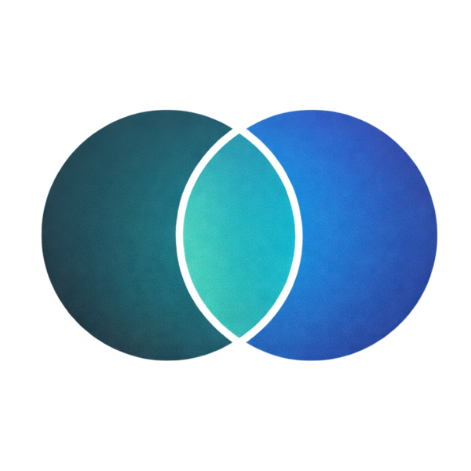
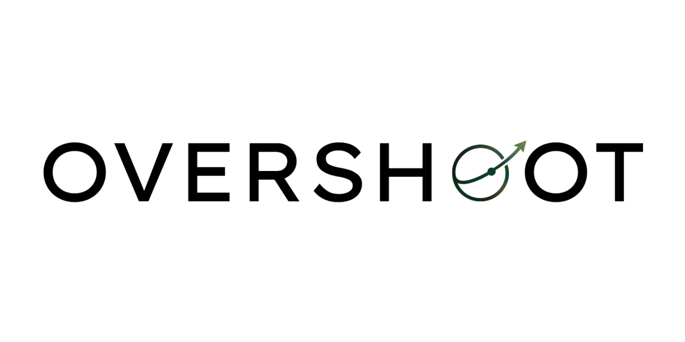
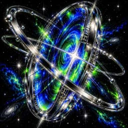
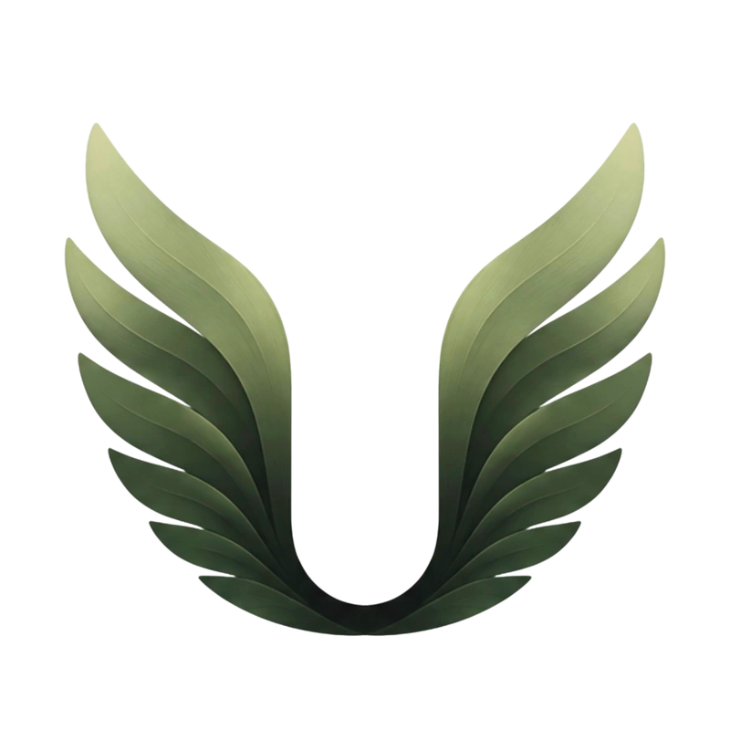
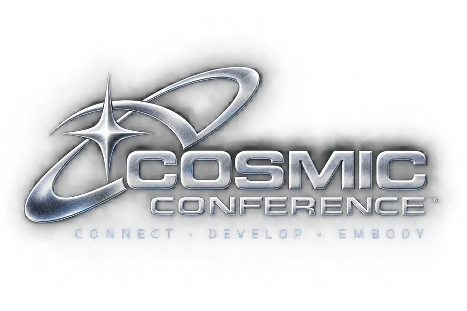
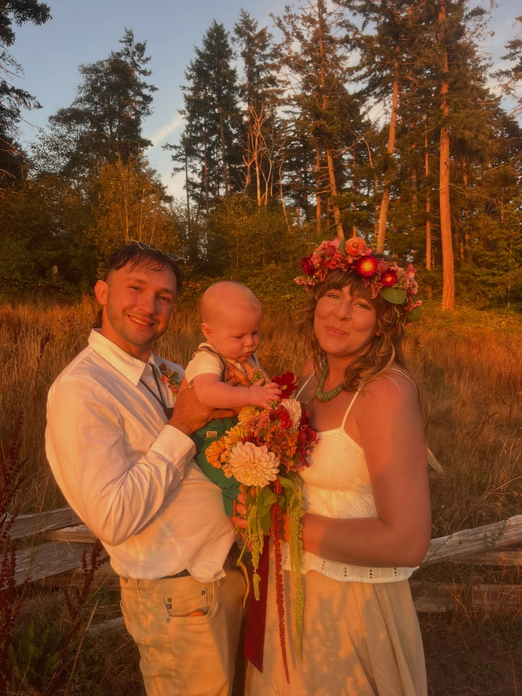

Astrology software
Starry Bodies
Lay today’s sky over your natal chart, follow your planetary lines across a map, or put the whole family in one synastry wheel.
Cast a chart
Autumn 2026
Astrology software
Lay today’s sky over your natal chart, follow your planetary lines across a map, or put the whole family in one synastry wheel.
Cast a chart
Ecological intelligence
Shawn Anderson, Darren Zal, and I build tools for reading landscapes. Four interactive studies follow water from Sacramento farms to the shorelines of the Salish Sea.
Explore the studies
Gathering & digital archive
On Halloween we turned Entelechy on Salt Spring into a conference for interdimensional visitors. The program, delegate badges, photo album, and midnight set live on.
Visit the afterglow
Open-source writing tool
Give Reword a few pieces you love writing. It learns what makes them yours and brings that voice to a letter, a post, or the next draft.
Try Reword
Material-flow atlas
Where did the copper in a wire come from? Follow a material through mines, ports, factories, and waste streams. The atlas keeps the sources and gaps in view.
Trace a material
Botanicals & interactive altar
Mackenzie and I make tea and botanical extracts on Salt Spring. Our online tea house takes the form of an altar with incense, a prayer wheel, and objects you can pick up.
Visit the altarSamuel Barnes
Growth, marketing, and community leadership for the agentic era.
I build teams, bring products to market, and develop the software behind the work.
Leadership & consultingI worked on growth, positioning, and partnerships for an AI infrastructure company. I helped build its site, documentation, and Atlas for assessing industrial locations with existing power.
Visit RefineryI hired and managed five moderators and advocates across time zones. I oversaw signup events in Berlin, New York, and Tokyo, coordinating contractors, delivery, and reporting.
Telegram grew from 3K to 15K; LinkedIn from under 2K to 10K+. Audience growth reflects the work of our marketing team; my responsibilities focused on community leadership and operations.
I founded GAIA AI and co-founded Symbiocene with Shawn Anderson and Darren Zal. I lead venture strategy, partnerships, positioning, and ecosystem development, with a focus on environmental intelligence and regenerative finance.
I secured a five-figure monthly recurring revenue engagement with Regen Network for AI and movement-building services, and presented the work at the United Nations.
Explore GAIA AII led marketing and growth for a renewable-energy and Web3 platform, with responsibility for brand, user acquisition, community engagement, and marketing operations.
I ran campaigns across Layer3, Galxe, social, and community channels, and developed thought leadership connecting renewable energy with emerging digital infrastructure.
Power Finance developed a yield-bearing synthetic dollar backed by the U.S. electricity market. I led growth, brand, marketing, and partnerships.
I developed product positioning, naming, design, and partner strategy to communicate the product’s structure and value to prospective users and partners.
I built and managed a 35K+ member Discord, a 16K+ X audience, and an ambassador network spanning more than 20 countries.
I worked with investor and partner teams including Aave, Compound, and OpenSea, while developing CRM and remote-team operating practices.
Additional experience: Electron Economy strategy with Montauk Climate.
Some roles overlapped; dates reflect each engagement.
Hands-on technical work
I work from architecture through implementation: agent tools, data pipelines, interfaces, and production workflows.
These projects show how I build: source-backed results, explicit permissions, and clear boundaries between what an agent can observe and what it can change.
Explore my GitHubAgent-ready data
One evidence base powers the website, JSON API, and remote agent interface. Agents can query material flows while retaining source dates, units, and data gaps.
Shared data architecture / MCP / bounded queries
Domain-specific tools
Eight agent tools cover emissions calculations, factor lookup, unit conversion, and reporting. Typed activity records feed a deterministic engine that returns factor references with each result.
Python / typed inputs / MCP / traceable calculations
Applied AI, environmental intelligence, and tools for better decisions.

AI transformation studio
AI adoption through working software: custom agents, connected workflows, and digital products. Training helps teams put those systems to use.

GAIA AI / material-flow atlas
A planetary atlas built to answer where materials come from and where they go. Interactive maps make the flows visible; an API and agent tools make the evidence usable.
Browser tools / attention & agency
A Chrome extension that gives people more control over their feeds. Local rules and an on-device image model filter unwanted content, replacing it with cats, nature, wisdom, or quiet.

Community for people building with AI
A community for people putting AI into practice. Share work, find collaborators, get thoughtful feedback, and help other builders bring their projects into the world.

Private automated trading
A private trading system connecting quantitative research, capital allocation, automated execution, and performance review. Strategies operate within defined exposure limits and execution permissions.
Environmental intelligence, knowledge, and publishing.
United Nations / 18 September 2025
I presented GAIA AI’s work on environmental intelligence and regenerative technology at the GloCha Emerging Technologies Summit, held at the United Nations.
Watch on YouTubeOutside work
Music, gatherings, publishing, and botanical tea. Different ways of making things people connect with.

31 October 2026Our Halloween gathering at Entelechy on Salt Spring Island, with talks, live music, and DJs. I built its digital world: the program, delegate guide, and interactive badge experience.
Explore the conferenceOriginal bass music and live recordings from my Sun Rose project, including the midnight set from Cosmic Conference.
Music-led gatherings on Salt Spring Island, alongside event production and sound-system rentals. A home for the experiences I organize beyond the screen.
Explore Sacred/SaucyMackenzie and I make botanical blends and extracts on Salt Spring. Our travelling tea house now has an interactive altar online.
Independent publishing
A cultural publishing project spanning social media and a daily curated edition. Explore the publication and its growing archive.
Read Alchememes
Background
I’m Samuel Barnes, a founder, growth leader, and builder based on Salt Spring Island. An MPA in Environmental Science and Policy from Columbia University shaped my work across climate, energy, Web3, and AI.
I work across the commercial and technical sides of a product: who it serves, how it works, and how it reaches people. Away from work, I make music, organize gatherings, and spend time with my family. I’m based between Brooklyn and Vancouver.
Columbia UniversityMPA, 2019 / Dean’s Fellowship
Brooklyn / VancouverProfessional Spanish
Open to Head of Growth, Head of Community, CMO, and founding-team roles. Tell me what you’re building, where you need leadership, and what success would look like.
Email about a roleWork with me on positioning, launches, partnerships, community, or fractional growth leadership. For custom AI systems and team training, visit Symbai Studio.
Book a conversation